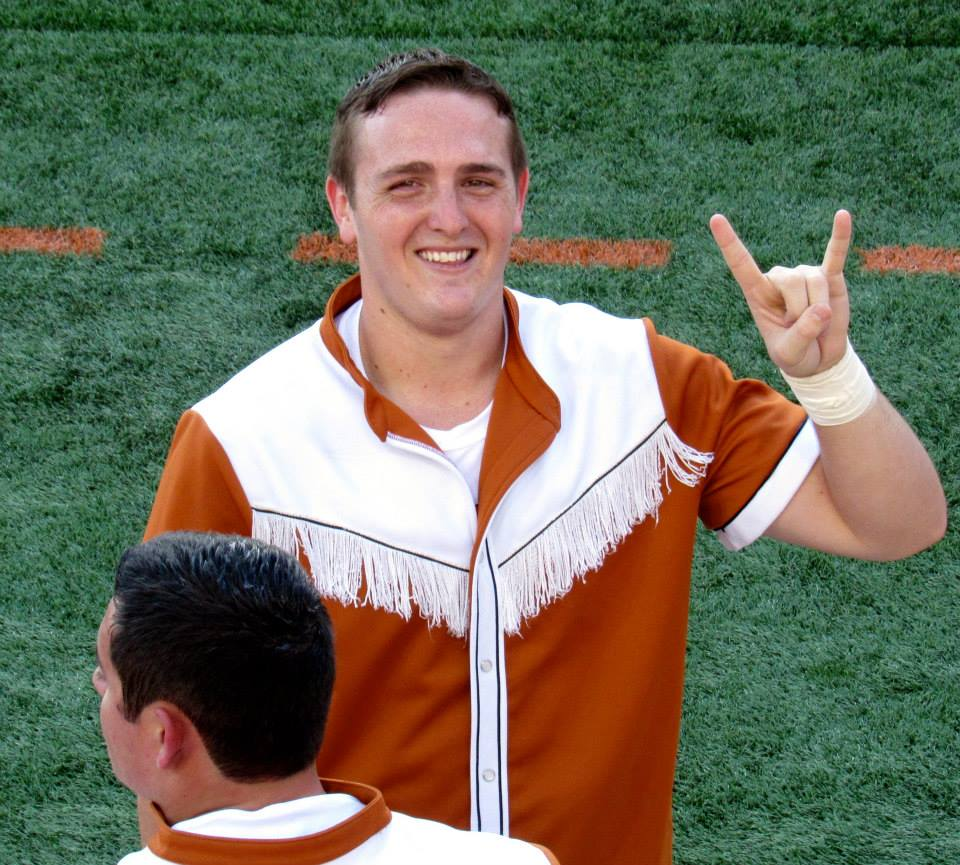

Connect with Me


About me

My name is Damon Foster. I am from Waxahachie, Texas, but I have been living in Austin for 7 years. I came to Austin to attend the University of Texas where I graduated with a degree in nutrition. I follow our football team religously and cannot wait for the season to start. Hook'em!